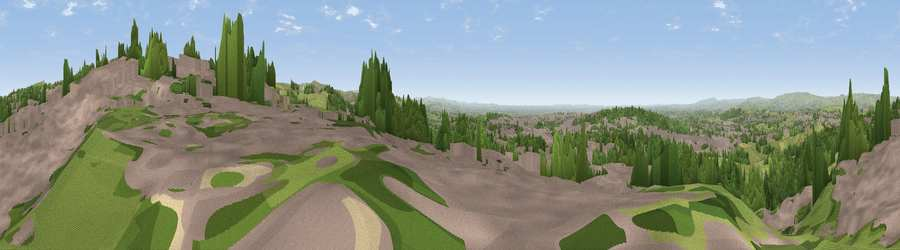

Viewpoint near Lees
#12545 in England · top 19% of its area beats it · near LeesThe view, rendered

A 360° render of this exact spot computed from the terrain model, tree cover and land cover — summer colours, afternoon light, calibrated against photographs of famous viewpoints. Real trees, hedges and buildings will differ in detail.
The panorama
Grey silhouette: terrain skyline in each direction (720 bearings, Earth curvature and refraction included). Dashed green: skyline with trees (+15 m) and buildings (+8 m) as obstacles. Blue strip: how far the ground is visible on each bearing.
Where the view opens
Wedge length = distance to the farthest visible ground on that bearing (vegetation-aware). Rings at 10, 25 and 50 km.
What fills the view
41% built-up · 32% grassland · 26% woodland
Angular shares of the visible panorama (visual magnitude), not map area. Landscape diversity 0.48 (0–1 Shannon).
Key numbers
More beautiful places nearby
The staircase of upgrades: each row has a higher view potential than everything closer. Driving times are estimates from straight-line distance, calibrated against real road routing — check an actual route before setting out.
| Place | Direction | Drive | Score |
|---|---|---|---|
| Viewpoint near Scouthead | SE · 1 km | ~4 min | 69.0 |
| Viewpoint near Shaw | NNE · 2 km | ~4 min | 72.9 |
| Viewpoint near Carrbrook | SE · 7 km | ~14 min | 74.0 |
| Viewpoint near Greenfield | SE · 7 km | ~14 min | 76.0 |
| Viewpoint near Carrbrook | SSE · 8 km | ~16 min | 77.1 |
| Viewpoint near Edenfield | NW · 17 km | ~30 min | 77.5 |
| White Brow | W · 29 km | ~46 min | 82.9 |
| Warton Crag | NW · 80 km | ~104 min | 83.2 |
53.55712, -2.07884 · source: screening · position refined by local search. Computed location — check access rights before visiting.